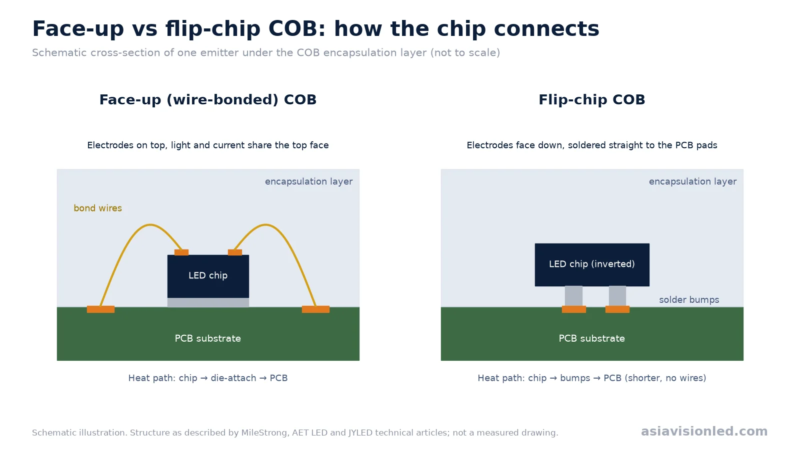

Suspended fine-pitch LED display in an exhibition hall, the kind of close-viewing indoor job where COB is now often specified (Asia Vision poster library).
Flip-Chip vs Face-Up COB LED Displays: What Buyers Should Know in 2026
2026-11-10Asia VisionTechnology
A few years ago the main COB question was simply "COB or SMD?" In 2026 the spec sheets have moved on. Quotations now say flip-chip COB, face-up COB or just COB, and they rarely explain the difference. Trade-show coverage from InfoComm 2026 described COB moving from a premium option to a mainstream fine-pitch choice, with several makers showing flip-chip COB walls. Public posts from LED brands at control-room and defence shows in October and November 2026 led with "flip-chip COB" too. The label is becoming a selling point, so buyers need to know what it actually changes.
This guide explains the two ways a chip can be mounted inside a COB module, where the difference matters for real projects, and how to check a supplier's claim. If you are still deciding between encapsulation families, start with our COB vs SMD vs GOB guide and come back here once COB is on the shortlist.
Two Ways to Mount a Chip Under COB
Every COB module does the same basic thing. Bare LED chips are placed directly on the PCB and covered with one continuous encapsulation layer, instead of being packaged one by one as SMD lamps. What varies is how each chip is wired to the board under that layer.
Face-up (wire-bonded) COB
In face-up COB, sometimes called traditional or wire-bond COB, the chip sits with its electrodes facing up. It is attached to the PCB and then joined to the circuit pads with fine bonding wires, usually gold. This is the older and more mature process. Equipment and supply chains are well established, so costs are easier to control. Several technical write-ups say it comfortably serves standard fine-pitch work such as meeting rooms, showrooms and classrooms at around P1.2 to P1.5.
Flip-chip COB
In flip-chip COB the chip is turned over so its electrodes face the board. Solder bumps on the underside connect it straight to the PCB pads, usually in a reflow process, and the encapsulation goes on afterwards. There are no bonding wires. The electrical path is shorter and the heat leaves through the bumps directly into the board.
Figure 1 compares the two structures for a single emitter.

Figure 1. Face-up vs flip-chip COB, schematic only and not to scale. Structure as described in technical articles from MileStrong, AET LED and JYLED.
Where the Difference Shows Up on a Real Wall
The structural change is small, but it affects four things a buyer will notice.
1. How fine the pitch can go
Bond wires need room. Each wire loops up from the chip and comes down on a pad beside it, so the pads and loops take space that grows tighter as pitch shrinks. Without wires, a flip-chip layout can pack emitters more densely. Manufacturers writing about the two processes say flip-chip becomes the usual choice below about P0.9, and that more makers are moving their sub-millimetre products to it. Our P0.9 manufacturing guide covers the other challenges at that density.
2. Heat path and efficiency
In face-up COB the heat travels down through the chip and its die-attach layer to the board. In flip-chip the active side faces the board and connects through the solder bumps, so the thermal path is shorter. Suppliers also describe lower electrical resistance and better luminous efficiency. A cooler chip at the same brightness usually ages more slowly. But no supplier can turn "shorter thermal path" into a lifetime figure without test data. The final temperature depends just as much on the PCB, the driver ICs, the encapsulant and the cabinet. See our driver IC guide and energy-saving guide for the parts of the power budget that sit outside the chip.
3. Failure points
Bond wires and their joints can be damaged by heat cycling, vibration or poor process control. Manufacturers list wire breakage as one of the defects flip-chip avoids, because there are no wires to break. That matters most on screens that are moved, knocked or heated and cooled every day, such as rental fleets and outdoor COB.
4. Cost and process maturity
Flip-chip needs more precise placement equipment and depends more on chip and solder quality. Every comparison we reviewed put its typical cost above wire-bonded COB. Face-up COB is not obsolete. For a P1.5 boardroom wall it may be the better-value choice.
Source: summary of the published comparisons listed at the end of this article.
What "Flip-Chip" Does Not Tell You
It is easy to treat flip-chip as proof of quality. It is not. One maker's own comparison makes the point plainly: driver ICs, PCB materials, chip quality, encapsulation, calibration, thermal design and manufacturing control all still decide how the screen looks and how long it lasts. Two flip-chip walls can differ more from each other than a good face-up wall differs from either.
Three other choices sit next to the chip mount and are often confused with it:
Common anode vs common cathode. This is about how current is supplied to the red, green and blue emitters. Common cathode can lower power and heat, but it is separate from flip-chip. Our COB ZH lists flip-chip with optional common cathode, which shows the two are independent.
Real vs virtual pixels. Some COB products offer a virtual-pixel mode that raises effective resolution. COB Z, for example, lists P1.95 and P2.6 with virtual P0.97 and P1.3. Compare real pitch with real pitch.
Surface finish and black uniformity. The encapsulant's colour and matte finish set how the wall looks switched off and in bright rooms. That depends on the coating process, not the chip mount. Our batch-matching guide covers how to control it.
Figure 2 shows a COB surface up close. At this distance, encapsulation finish and pixel uniformity matter as much as what sits beneath.
Figure 2. Close-up of a fine-pitch LED surface. Viewing distance, finish and calibration decide what the audience sees (Asia Vision image library).
Which One Fits Your Project
Decide from the application, not the label.
Meeting rooms, classrooms, showrooms at P1.2 and coarser: either process works. Compare calibrated samples, warranty and price. Wire-bonded COB is often the value choice.
Sub-P0.9 walls, control rooms, broadcast and premium boardrooms: flip-chip is the mainstream route. Expect to pay for it, and ask for redundancy and calibration data at the same time.
Rental and touring: knocks, transport and daily heat cycles favour a wire-free chip mount under a hard COB face. Ask for the supplier's impact-resistance figure and how they tested it.
Outdoor fine pitch: high drive current, heat and weather make the thermal path and sealing more critical. Treat flip-chip as a plus, but judge the module's IP rating and thermal design first.
How to Check a Supplier's Flip-Chip Claim
Because "flip-chip" now appears on so many quotations, ask for evidence rather than a tick in a table:
Name the chip mount per pitch. A supplier may use flip-chip on one pitch and face-up on another. Ask for it in writing for the exact pitch you are buying.
Ask for a structure photo. A microscope image or cross-section of the module you will receive, not a generic marketing diagram.
See the ageing record. Ask how long modules are burned in before shipping and what is checked afterwards. Our COB manufacturer verification guide lists what to look for on a factory visit.
Agree the repair method. COB field repair is normally a module swap, with chip-level rework done in a workshop. Agree the spare-module quantity up front.
Tie it to the warranty. A confident supplier will put the dead-pixel and uniformity terms in the contract.
Flip-Chip COB in the Asia Vision Range
Several of our COB lines are built on flip-chip, and their product pages say so:
RH-PRO: flagship fine-pitch COB flip-chip, P0.78 to P1.56, refresh of at least 7680 Hz, 25000:1 contrast, DCI-P3 of 99 percent or more, and dual power, dual receiving cards and dual signal paths for rooms that cannot go dark.
COB Z: rental COB with flip-chip process, P1.95 and P2.6, at least 7680 Hz for camera work, and a 500 × 500 mm cabinet that supports ±5° arcs and right angles.
COB ZH: touring flip-chip COB at 4000 nits, rated for wind up to 20 m/s, with optional common cathode.
COB EF: outdoor flip-chip COB at 3000 nits in P1.56 and P1.953.
X Series: one front-service cabinet platform that takes COB flip-chip, virtual COB, SMD or GOB modules.
Figure 3 shows the RH-PRO cabinet, our flip-chip line for fine-pitch rooms.
Every panel carries a 3-year warranty, with 18-day factory dispatch from Shenzhen. If you are comparing a flip-chip quotation with a wire-bonded one, send us both spec sheets and we will point out where they really differ.
FAQ
Q: Is flip-chip COB always better than face-up COB?
A: No. Flip-chip removes bond wires, shortens the heat path and makes very fine pitches easier, but it costs more. At P1.2 and coarser, a well-made wire-bonded COB wall can be the better-value choice. Calibration, driver ICs and thermal design still matter as much as the chip mount.
Q: At what pixel pitch does flip-chip become necessary?
A: Manufacturers writing about the two processes say flip-chip becomes the usual route below about P0.9, where bond wires and pads leave little room. Above that, both processes are in common use.
Q: Does flip-chip COB use less power?
A: Suppliers describe better luminous efficiency and a shorter thermal path. Actual power draw also depends on the driver scheme, such as common cathode, the brightness setting and the content. Compare measured typical and maximum power per square metre for the same pitch and brightness.
Q: Can a flip-chip COB module be repaired?
A: Field repair is normally a module swap. Chip-level rework is done in a workshop with special tooling. Agree a spare-module quantity and RMA turnaround with the supplier before the order.
Q: Is common cathode the same as flip-chip?
A: No. Common cathode is a way of supplying current to the red, green and blue emitters. Flip-chip is a way of mounting the chip. A product can have either, both or neither.
Sources
MileStrong, "Wire-Bond COB vs. Flip-Chip COB: Key Differences in Packaging Technology and Applications".
AET LED, "Understanding Traditional vs. Flip-Chip COB LED Technologies".
JYLED (szjy-led.com), "Face-Up vs. Flip-Chip COB: What's the Difference?".
PTC LED (szptcled.com), "Flip-Chip vs Wire-Bond COB LED Displays: Key Differences".
rAVe [PUBS], InfoComm 2026 coverage of flip-chip COB video walls; vendor InfoComm 2026 reports on COB becoming mainstream.
Asia Vision product pages: RH-PRO, COB Z, COB ZH, COB EF, X Series (specifications as published).
Shortlisting a fine-pitch COB wall? Tell us the room size, viewing distance and pitch you are considering. Our team will recommend a configuration and quote it, or use the LED display calculator for a first estimate.